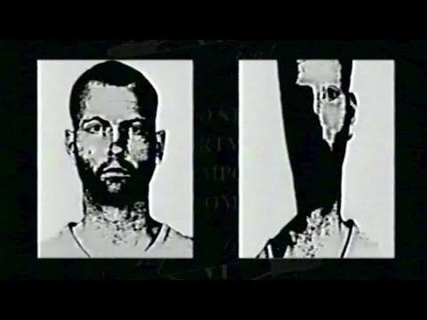
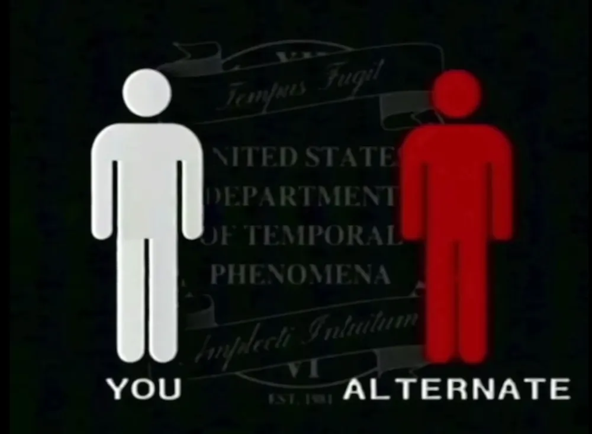
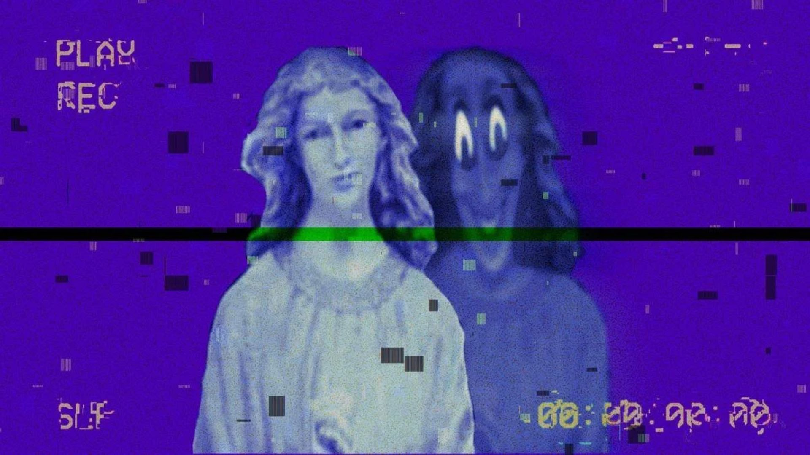
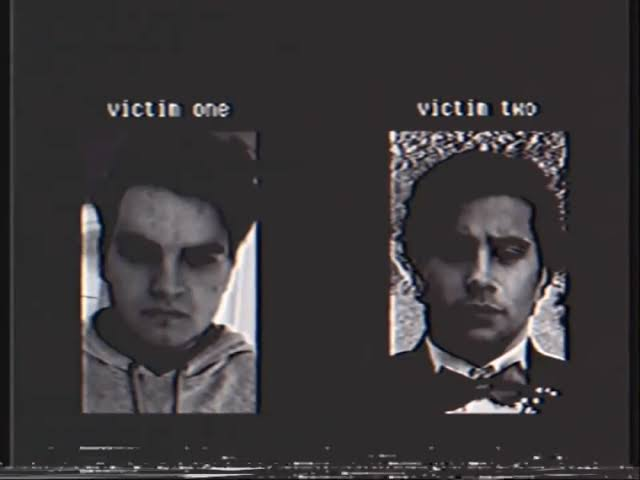
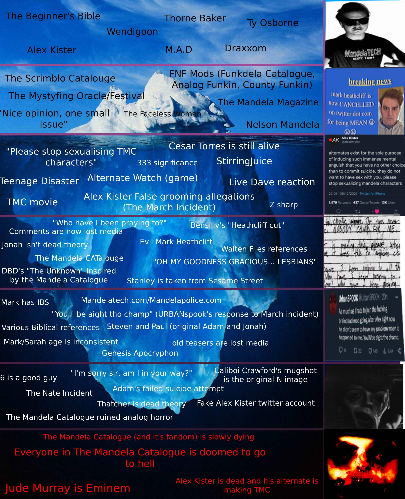

Volume 1
Documents the beginning of the outbreak in Mandela County during the 1990s. It features the Emergency Alert System (EAS) instructional tape warning citizens about the dangers of the Alternates and how the anomaly spreads.
VOL 1

The Alternates
Hostile entities capable of replacing human beings. They are categorized into three main types:
- Doppelgänger: An identical physical copy of the target victim.
- Detectable: Exhibits clear physical deformities or altered proportions.
- Flawed: Attempts to mimic human appearances but fails on key details.

TV Tapes
A collection of recovered VHS tapes found throughout the county. They contain altered children's broadcasts, hijacked public access channels, and the infamous "Intruder" tape aired at midnight.

Victims
Records of individuals affected by M.A.D. (Metaphysical Awareness Disorder). Highlights documented cases, including the encounters of Mark Heathcliff and Cesar Torres.

Theories
Community insights exploring the distorted biblical origin of the story, the psychological manipulation through analog media, and the true motives of the entity known as Gabriel.
